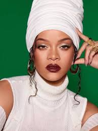

Cantora, Compositora, Atriz, Empresária e Estilista

| Nome | Robyn Rihanna Fenty |
| Nascimento | 20/02/1988 |
| Estilo Musical | Pop |
| Álbuns Lançados | Music of the Sun, A Girl like Me, Good Girl Gone Bad, Rated R, Loud, Talk That Talk, Unapologetic, Anti |
Robyn Rihanna Fenty nasceu no dia 20 de fevereiro de 1988 na pequena cidade de Bridgetown, paróquia de Saint Michael, capital da ilha caribenha Barbados, filha da contadora Monica Braithwaite e do supervisor de armazém Ronald Fenty. Rihanna tem dois irmãos, Rorrey e Rajad Fenty, e duas meias-irmãs e um meio-irmão por parte paterna, cada um nascido de mães diferentes, fruto de relacionamentos anteriores de Ronald. Rihanna tem ascendência irlandesa e afro-guianense herdada de seus progenitores. Ela foi criada residindo em uma quitinete de três quartos em Bridgetown e vendeu roupas com o pai em uma barraca na rua para ajudar nas despesas de casa. Sua infância foi profundamente afetada pelo alcoolismo e uso de drogas ilícitas por parte de seu pai, o que contribuiu para o casamento tenso entre ele e sua mãe. O pai de Rihanna costumava abusar fisicamente de Braithwaite e ela tentava intervir entre eles para apartar as brigas.
O primeiro investimento musical de Rihanna foi montar um trio musical com outras duas colegas de classe. Elas foram descobertas em seu país natal, Barbados, pelo produtor americano Evan Rogers. Sem nome ou material, o grupo feminino conseguiu fazer uma audição com Rogers, que comentou: "No momento em que Rihanna entrou na sala, era como se as outras duas garotas não existissem". Rihanna foi convidada a ir ao quarto de hotel onde Rogers estava hospedado, lá ela interpretou para ele as músicas "Emotion" do Destiny's Child e "Hero" de Mariah Carey. Impressionado, Rogers agendou uma segunda reunião com a mãe de Rihanna presente e, em seguida, convidou ela para sua cidade natal nos Estados Unidos para gravar algumas fitas demo que pudessem ser enviadas para gravadoras.[16] As gravações eram intermitentes, demorando cerca de um ano para ficarem prontas, porque ela só conseguia gravar durante suas férias escolares. As canções "Pon de Replay" e "The Last Time" foram algumas das canções gravadas para a fita demo, e posteriormente, acabaram por ser incluídas no seu primeiro álbum Music of the Sun. Nesse mesmo ano, Rihanna assinou contrato com a produtora de Rogers e Carl Sturken, Syndicated Rhythm Productions, que passou a gerenciar sua carreira.
A demo gravada por Rihanna foi enviada para a Def Jam Recordings, onde Jay Brown, um executivo do setor de artistas e repertórios da gravadora, foi um dos primeiros a ouvi-la. Brown enviou a fita demo ao rapper Jay-Z, que havia sido recentemente nomeado presidente e diretor executivo da Def Jam. Quando Jay-Z ouviu a música "Pon de Replay" pela primeira vez, ele sentiu que a faixa continha notas vocais muito altas para ela. Apesar de cético, ele convidou-a a uma audição para o selo. No início de 2005, a cantora fez o teste para a Def Jam na cidade de Nova Iorque, onde o rapper a apresentou ao magnata da música Antonio "L.A." Reid. Na audição, ela cantou um cover de "For the Love of You" gravada por Whitney Houston, bem como outras duas faixas contidas em sua demo; "Pon de Replay" e "The Last Time". Jay-Z estava absolutamente certo sobre contratá-la depois que a viu apresentando seu futuro single "Pon de Replay"
Em 12 de agosto de 2005, seu álbum de estreia, Music of the Sun é oficialmente lançado. Estreando em décimo lugar na parada estadunidense Billboard 200 e recebeu um certificado de ouro entregue pela Recording Industry Association of America (RIAA), após registrar vendas superiores a 500 mil unidades em solo americano. Ao todo, vendeu mais de dois milhões de cópias em todo o mundo. Seu segundo foco de promoção, "If It's Lovin' that You Want", não teve tanto sucesso quanto seu antecessor, mas alcançou as dez primeiras colocações na Austrália, Irlanda e Nova Zelândia.
Em 10 de abril de 2006 chega às lojas A Girl like Me. Um sucesso comercial, alcançou as dez primeiras colocações em treze países. Conquistou o primeiro lugar no Canadá e a quinta posição no Reino Unido, além dos Estados Unidos onde vendeu mais de 150 mil cópias em sua semana de estreia. Tornou-se o primeiro álbum de Rihanna a ser certificado com platina pela RIAA, depois de vender mais de um milhão de cópias em solo americano. O primeiro single, "SOS", foi um sucesso internacional, estando entre os cinco mais tocados em 11 países. Tornou-se a primeira seu primeiro single a atingir o ápice na Billboard Hot 100.
No início de 2007, Rihanna já havia começado a trabalhar em seu terceiro álbum de estúdio. Com a ajuda dos produtores Timbaland, Tricky Stewart e Sean Garrett, ela adotou uma nova direção musical apostando em faixas de andamento acelerado. Em 31 de maio de 2007, Good Girl Gone Bad é oficialmente liberado. O projeto alcançou o segundo lugar em vendas na Austrália e nos Estados Unidos, além de liderar as tabelas em vários países; incluindo Brasil, Canadá, Irlanda e Reino Unido.
Em 9 de junho de 2008 é lançado seu primeiro álbum ao vivo, Good Girl Gone Bad Live. O lançamento em vídeo do projeto continha a gravação de um show realizado por Rihanna em 6 de dezembro de 2007 na Arena de Manchester localizado na cidade de Manchester, Reino Unido, como parte da turnê Good Girl Gone Bad.
No início de 2009, a barbadiana iniciou os trabalhos em seu novo álbum de estúdio. Em 20 novembro do mesmo ano o material resultante, Rated R, foi disponibilizado. Contendo um conceito mais sombrio e agourento em comparação aos seus trabalhos anteriores. Comercialmente, debutou na 4ª posição da Billboard 200. Foi apoiado por seis singles, incluindo "Rude Boy". Este, que foi seu maior sucesso mundial, conquistou a 1ª posição na Billboard Hot 100 por seis semanas e posicionando-se entre as dez canções mais tocadas em outras 22 nações.
Em janeiro de 2010, Rihanna colaborou com o rapper Eminem na faixa "Love the Way You Lie", que tornou-se um grande sucesso mundial, estabelecendo-se no cume do gráfico de 20 países. Conquistou o 2º lugar em terras britânicas, tornando-se a canção mais bem-sucedida de 2010 no país e a primeira de Rihanna a vender mais de um 1 milhão de unidades por lá.
No início de 2012, duas colaborações com Rihanna foram lançadas: "Princess of China", com a banda Coldplay, que foi incluída no disco Mylo Xyloto e "Take Care", em parceria com Drake, contida no álbum de mesmo nome. Na cerimônia realizada em 2012, a cantora recebeu seu terceiro prêmio Grammy, na categoria de Melhor Colaboração Rap, por sua participação na canção "All of the Lights" de Kanye West. Em março, ela disponibilizou duas colaborações suas com seu ex-namorado, Chris Brown: a versão remixada de "Birthday Cake" e o lançamento inédito "Turn Up the Music". Ambas as faixas foram recebidas negativamente devido ao histórico de violência doméstica do casal.
Sua quinta digressão solo, Diamonds World Tour, começou em março de 2013, em apoio ao Unapologetic.[101] No mesmo mês, o americano Wale lançou uma versão remixada de seu single "Bad", com a participação da barbadiana. Em outubro, "The Monster", uma colaboração entre Eminem e Rihanna foi disponibilizada como o quarto lançamento do oitavo disco de estúdio do rapper, The Marshall Mathers LP 2 (2013).